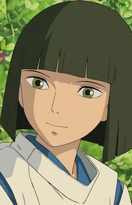
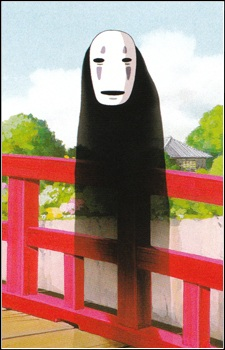
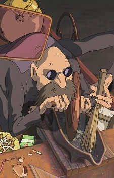

Informasi Anime
Genre: Adventure, Fantasy
Ditayangkan: Jul 20, 2001
Tahun Rilis: 2001
Jumlah Episode: 1
Durasi: 2 jam 4 menit
Studio: Studio Ghibli
Platform Streaming:
Sen to Chihiro no Kamikakushi
Cerita mengikuti Chihiro Ogino, seorang gadis berusia 10 tahun, yang tersesat ke dunia roh saat keluarganya berpindah
rumah. Orang tuanya berubah menjadi babi setelah memakan makanan di dunia tersebut, memaksa Chihiro untuk bertahan
hidup dan menemukan cara menyelamatkan mereka.
Chihiro bekerja di pemandian roh milik Yubaba, penyihir yang menakutkan, sambil berusaha menemukan cara untuk
menyelamatkan orang tuanya. Ia dibantu Haku, seorang bocah misterius yang bisa berubah menjadi naga, dan perlahan
belajar keberanian, ketekunan, dan arti tanggung jawab.
Spirited Away menampilkan perjalanan pertumbuhan Chihiro melalui pengalaman magis yang menakjubkan, dengan tema
persahabatan, keberanian, dan identitas diri. Film ini kaya akan simbolisme, visual menakjubkan, dan pesan moral
yang kuat, membuatnya menjadi karya klasik Studio Ghibli.
Character & Voice Actor

Haku
Irino Miyu


Chihiro Ogino
Hiiragi Rumi


Kaonashi
Nakamura Akio


Kamajii
Sugawara Bunta